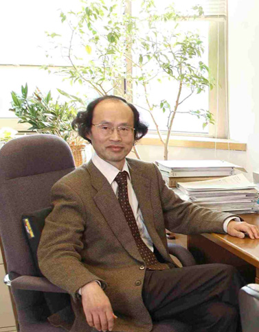

People

（Photo by H. Sato）
Alumni
Sharareh Sayyad (Now at Göttingen University, Germany)
Yuta Murakami [PhD, 2015] (Now at RIKEN)
Motoharu Kitatani [PhD, 2017] (Now at Dept of Material Science, Univ. of Hyogo, Japan)
Sota Kitamura [PhD, 2017]（Dept of Applied Physics, Univ. Tokyo)
Arata Sugioka [MSc, 2016]
Shintaro Takayoshi (Now at Dept of Physics, Konan Univ., Japan)
Naoto Tsuji [PhD, 2010] (Now at Dept of Physics, Univ. Tokyo)
Takahiro Mikami [PhD, 2013]
Toshikaze Kariyado (Harvard University / NIMS)
Kazutaka Nishiguchi [PhD, 2012] (School of Science, Kobe Univ.)
Natsuki Kariya [MSc, 2013]
Takahiro Morimoto [PhD, 2011] （Dept of Applied Physics, Univ. Tokyo)
Haruki Watanabe [MSc, 2012]（Dept of Applied Physics, Univ. Tokyo)
Yoshiro Nohara
Hirokazu Takashima [PhD, 2008]
Naoya Horiguchi [MSc, 2008]
Motohiko Ezawa [MSc, 2007]（Dept of Applied Physics, Univ. Tokyo)
Shiro Sakai [PhD, 2006] (Riken)
Masaki Tezuka [PhD, 2006] (Physics Dept, Kyoto Univ.)
Toshihiko Yoshikawa [MSc, 2006]
Isseki Shimomura [MSc, 2005]
Takashi Oka [PhD, 2004] (Now at ISSP, Univ. Tokyo)
Yukari Kuramoto [MSc, 2003]
Seiichiro Onari [PhD, 2004] (Physics Dept, Nagoya Univ.)
Mikito Koshino [PhD, 2002] (Physics Dept, Osaka Univ.)
Satoshi Muto [MSc, 2000]
Hajime Takigawa [MSc, 1998]
Satoru Muto [PhD, 2000]
Naoya Miyamoto [MSc, 1996]
Tadashi Kato [MSc, 1995]
Hiroshi Imamura [PhD, 1997] (AIST)
Ryotaro Arita [PhD, 1999]（Now at Dept of Physics, Univ. Tokyo)
Masaru Onoda (Now at Dept of Mathematical Science, Akita Univ., Japan)
Takashi Kimura [PhD, 1996] (Now at Grad School of Science, Kanagawa Univ., Japan)
Kazuhisa Inata [PhD, 1994]
Koichi Kusakabe [PhD, 1993] (Now at Dept of Material Science, Univ. of Hyogo, Japan)
Tatsuya Nakajima [PhD, 1993] (Physics Dept, Tohoku Univ.)
Kazuhiko Kuroki [PhD, 1993] (Physics Dept, Osaka Univ.)
Kunio Ishida [PhD, 1991]
Shinji Tsuneyuki [PhD, 1989] (Physics Dept, Univ. Tokyo)
Contact
Hideo Aoki
Professor of Physics
Department of Physics,
Faculty of Science Bldg.1
University of Tokyo
Hongo, Tokyo 113-0033 Japan
Email:
aoki_at_phys.s.u-tokyo.ac.jp